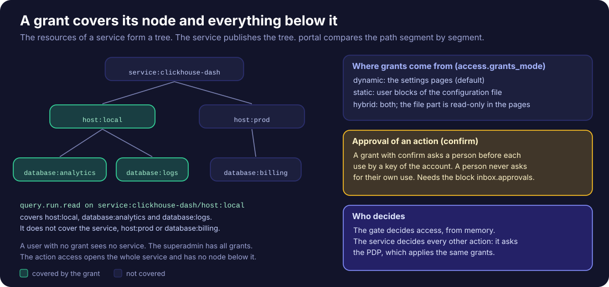
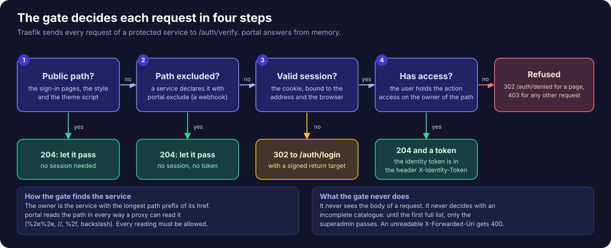

The settings pages say "permission" where this page and the ProcurAuth protocol say "grant". The two words name the same thing.
Grants
A grant is an action on a node of the resource tree of a service (protocol sections 4 and 5). A grant has this form:
<action> on service:<id>[/<type>:<resource id>]...access on service:grafana: the grant applies to the whole service.query.run.read on service:clickhouse-dash/host:local: the grant applies to the hostlocaland to each node below it.query.run.write on service:clickhouse-dash/host:local/database:analytics: the grant applies to the databaseanalyticsof the hostlocal.

The picture shows one service with a tree of hosts and databases. A grant on a node covers this node and each node below it. A grant on a database does not cover its host, a database of another host, or the whole service. A key has its own grants. The key never goes beyond the grants of its owner.
The parts of a grant
- The
<action>is a lower-case name. It has parts ofa-z,0-9and_, joined by.. It has 64 characters at most. - The
<id>is the id of the service in the catalogue. It has lower-case letters and digits, joined by-, and 64 characters at most. The id is the labelportal.id, or the slug of the group and the name. The idportalis reserved (see "Approval of an action"). - The part after the service has 0 to 4 segments. Each segment is
<type>:<resource id>. - A type starts with
a-z. Then it hasa-z,0-9and_. It has 1 to 32 characters. The typeserviceis the whole service: it is never a segment. - Each resource id is percent-encoded (RFC 3986). Each byte outside
A-Z a-z 0-9 - . _ ~is%XX, with upper-case hex digits. For example, the ida/bisa%2Fb. A/or a:in an id never divides a segment. - The escape form is canonical. portal refuses another escape form of the same id, for example
%2for%61. - A decoded id has 1 to 256 bytes, with no control character. portal uses the id as it is and never changes its case. The settings pages show the decoded ids.
- A grant can hold limit values. See Keys and limits.
- A grant can have the property
confirm(see "Approval of an action"). It is not a limit: it has no value and no counter. The text form of the grant does not show it.
What each action means
accesslets the user open the service. portal decidesaccessin/auth/verify.accesshas no grant below the service: it opens the whole service.- The service
portalis the scope of the functions of portal itself. It is not a service of the protocol (see "Approval of an action"). - The other actions are the actions that the service publishes at
/.well-known/procurauth/actions(protocol 5.1). The service decides these actions. The service asks the PDP of portal. See Identity tokens and the PDP.
Coverage and the resource tree
- A grant covers the node that it names and each node below it. portal compares the segments one by one (prefix match). For example,
query.run.read on service:dbcovers each host and each database ofdb. - A grant below the service does not cover its parent, a node of another branch, or the whole service.
- The service gives its tree of resource types. The top-level list
resource_typesof its document declares each type and its parent. The parent isserviceor another declared type. The list is mandatory (protocol 5.2). It can be empty: each action of the document then lists only the typeservice. - A document without the list is bad as a whole. portal keeps the last good document.
- Each action of the document has a list
resource_types. It names the types on which a grant for this action is valid. - The types of the segments must follow the parents. With
hostbelowserviceanddatabasebelowhost, writehost:<id>/database:<id>. A grant ondatabase:<id>alone does not follow the tree. - A grant below the service applies only when the last known document of the service follows it. The action must list the type of the last segment. The segments must follow the parents. Otherwise the PDP does not apply the grant.
- When portal never read the document of the service, the PDP applies no grant below this service. A grant on the whole service needs no declaration.
- Two grants that differ only by
confirmcount as one grant withconfirm, when their limit values are equal.
Who has grants
- A new user has no grant. The user sees no service until the superadmin gives a grant.
- The superadmin has all grants. The superadmin has no
userblock in the file. - portal has no groups of users. Each user has their own grants.
- A key has its own grants. The PDP also looks at the grants of the owner of the key (see Keys and limits).
Where the grants come from
The key access.grants_mode gives the source of the grants. The three modes are the three sources of protocol 3.5.
| Mode | Grants of the user blocks | Grants of the settings pages |
|---|---|---|
static | The server uses them. | The server does not use them. The settings pages show the grants and do not change them. If the database holds grants, the server writes the warning stored_grants_not_used at start. |
dynamic (default) | A user block stops the server at start. | The superadmin gives and removes them. The database keeps them. |
hybrid | The server uses them. They are read-only in the settings pages. | The superadmin gives and removes them. |
access { grants_mode = "hybrid"}user "alice" { grants = ["access on service:grafana", "query.run.read on service:db"]}The server reads the user blocks at each start. When you remove a grant from the file, the grant stops at the next start. The server does not write the grants of the file to the database.
A user block can give a grant below the service, for example "query.run.write on service:db/host:local/database:analytics". A grant with a bad form stops the start. Examples are a bad type, a bad escape and more than 4 segments.
At start, portal does not know the services yet: the catalogue and the action documents come at run time. A grant that does not follow the tree of its service therefore does not stop the start. The Services settings page lists it under "permissions to check". The log has the warning grant_to_check. At run time, the PDP does not apply this grant.
Approval of an action
A grant can ask for the approval of a person before each use of its action. The grant then has the property confirm. The PDP uses the property: see The approval gate.
- Each action of each service can ask, except
accessandmcp.session. A service must handleapproval_requiredfor all its actions. A service that cannot approve one of its actions does not conform (protocol 1.3 and 17). The document of the service has no member for this. The file of portal has no flag for it. portal ignores a memberapprovalin an action. - The PDP asks for an approval only when the file has the block
inbox.approvals. Otherwise the PDP gives a plainfalse, and the approval API gives403. - In the grant editor, a lock button shows on the row of each ticked permission of a service, when the file has the block
inbox.approvals. An open lock means no approval. A closed lock means that the permission asks for an approval. - Without the block
inbox.approvals, the editor offers no lock. A grant that already hasconfirmshows a closed lock that is off. The tooltip tells the reason. - The action
access, the actionmcp.sessionand the actions of the serviceportalhave no lock. - The tooltip of the lock on the form of an account says that the lock asks for the keys of the account. The account itself never asks.
- The tooltip also says that a call that cannot wait gets
approval_cannot_wait. A page of the service is such a call.
The scope portal is not a service
The service portal holds the functions of portal itself: the keys, the alerts and the questions of the Inbox. The settings pages call it "Server permissions".
- Its document is in the code of portal. It has no PEP, no route
/.well-known/procurauth/actionsand no identity token. - portal decides these actions in process.
- Protocol 1.3a lets a PDP have such built-in actions. Protocol 1.3, 5.2b and 17 do not apply to them, so
confirmis refused on them. - The server refuses
confirmon a grant of the serviceportal, on the actionaccessand on the actionmcp.session. A form that asks for it gets a bad grant. A file that asks for it stops at start. - The action
mcp.sessionopens a session and answers the methods that have no tool, for exampleinitializeandping. It has no effect to approve, and such a method cannot wait (protocol 17.8, binding 3.6a). A tool of a service never uses it.
A person never asks for their own use
The confirm of a grant of a person has no effect on the questions of that person (protocol 17.8). The person would approve their own action. The flag applies to the keys of the person.
- The decision for a key asks when a grant of the key has
confirm. It also asks when a grant of the owner hasconfirm. - The two sides combine with OR, as the limits do. When the owner is the superadmin, only the grants of the key count.
- The approval API never gets a person as the subject of a request.
- A key shows the chip
confirmin the list of the keys. The editor of a key shows the lock closed and locked when a grant of the owner asks for the approval. The person cannot open it, because the key cannot go beyond its owner.
An operation with several permissions
The approval follows the action of the use alone (protocol 5.5a and 17.7). The action of the use is the action that the call runs.
- For example, the tool
export_queryof ClickHouse Dash usesquery.export. It also needsquery.run.read. - Only a
confirmonquery.exportsubmitsexport_queryfor approval. - A
confirmonquery.run.readasks for the tools that usequery.run.readthemselves, for examplerun_query. It never blocksexport_query. - To keep exports under control, put
confirmonquery.export. - The service marks the question of the other permission with
context.permission_only. The PDP then ignoresconfirm.
Pages and routes that cannot wait
A service answers a call that cannot wait with 403 and {"error": "approval_cannot_wait"}, when the PDP asks for an approval (protocol 17.7a).
- A key that calls an HTTP route or a page of a service meets this answer. Only a call of an MCP tool can wait.
- A
confirmon such an action is thus useful for MCP tools only. Nothing changes for the plain HTTP routes. - A service that checks its own standalone keys, with no identity token and no PDP, stays outside the approval.
The grant in a file
In the file, an item of grants can be an object: { grant = "query.run.write on service:clickhouse-dash/host:prod", confirm = true }. The value is true or false, without quotes. The default is false.
The gate
The gate is the route /auth/verify. Traefik calls it with ForwardAuth before each request to a protected service. The route reads only the headers of the request. It never gets the body of a request or of a response. portal stays a ForwardAuth server, and Traefik is the only proxy. See Traefik and TLS for the set-up.

The picture shows the four steps of the list below. First the route reads X-Forwarded-Uri. It answers 400 when the header is absent, is repeated, is not valid or is too long (security.max_forwarded_uri_bytes). Then it runs the steps of the list.
- The public paths of the sign-in pass with
204. They are the sign-in, the sign-out, the two steps of the second factor, and the style and script files of the sign-in pages. This prevents a loop when the middleware is global. - A path that a rule
portal.excludeopens passes with204and no session (see "Paths open without a session"). - A request without a valid session gets
302to/auth/login. The address holds the signed return target. - With a session, portal finds the service that owns the path. It decides
accesswith the grants in memory. An allowed request gets204. With the blockidentity, the answer also has the identity token of the service.
A refused browser navigation (GET or HEAD) gets 302 to /auth/denied. Any other refused request gets a plain 403.
Traefik limits the body of a ForwardAuth answer, so the answer cannot hold a page. The page /auth/denied does not give the name of a service. A user does not see a service that is not open to that user.
Which service owns a path
/auth/verify finds the service from the path in X-Forwarded-Uri. The service owns the longest path prefix of its href. portal decodes the href as it decodes the request path, so /my%20app/ owns /my%20app/x.
- Traefik reads
PathPrefix(`/files`)as a text prefix. It also routes/filesXand/files.jsonto that service. The gate therefore gives these paths to the service of/files/too. Only a user withaccesson the service passes. The request gets no identity token. - The longest prefix wins, as in Traefik. For example,
/grafana/administratorbelongs to the service of/grafana/admin/. - The paths below
/auth/stay with portal. - The router rule of a service must not match a path outside the text prefix of its
href. For example, do not give thehref/pgadmin/browser/to a service with the rulePathPrefix(`/pgadmin`). The gate does not own/pgadmin/misc/. - When two services share one
href, access to one of them opens the path. - An external service owns no path of the gate (see Launcher and service discovery).
Readings of a path
Traefik routes on the clean path, but sends the raw URI. The gate therefore reads the path in every way that a proxy or a backend can read it. These ways include %2e%2e, // and \. They also include %2f as a character and as a separator. The gate lets the request pass only if every way is permitted. For example, portal judges /grafana/../clickhouse/ as a request for ClickHouse.
A URI that portal cannot read safely, for example with a broken escape or a NUL byte, is refused for each user except the superadmin.
Open paths and the catalogue
/auth/*is always open to a user with a session.- A path that no service owns, such as an absolute asset path, is open to each user with a session.
- The previous rule needs a complete catalogue. The catalogue is complete when each configured discovery source gave its full list. The instance opens its ports only after this (see Operations). A user never reaches the gate with an incomplete catalogue.
- A source that failed at set-up never makes the catalogue complete. The metric
portal_catalog_completeshows the state. After the first full list, a failed read keeps the last good list. The catalogue stays complete.
Closed paths
A closed path lets only the superadmin pass.
- A workload with unusable labels is not listed. The gate keeps the path of its
hrefclosed. The same rule applies to a workload whose id another workload already uses with anotherhref. The catalogue problems name both cases. - A list that lacks a workload does not open its path. Examples are a container that restarts and a container that Compose recreates. The path keeps its last owner for 20 refreshes. This is 5 minutes at the default
discovery.intervalof 15 seconds. A new workload has no owner until the first refresh that lists it. - A workload that does not ask to be listed also keeps the path of its
hrefclosed. Examples areportal.enabled=false,homepage.*labels withouthomepage.name, andgethomepage.dev/*annotations withoutgethomepage.dev/enabled=true. Traefik still routes such a workload. - To open a path to each user with a session, do not give it as the
hrefof a hidden workload. - The launcher shows only the services for which the user has
access. The discovery problems name workloads. Only the superadmin sees these problems.
Paths open without a session
A caller that has no session, for example a webhook or a probe, needs a path that portal does not authenticate. The service declares this path with portal.exclude. This is an annotation in K3s. Write one rule per line. portal ignores blank lines and # comments:
portal.exclude: | POST /dagu/api/v1/webhooks/* GET /dagu/api/v1/health PUT,POST /dagu/hooks/**A rule has this form: [METHOD[,METHOD]] /path.
- A method is one of
GET,HEAD,POST,PUT,PATCH,DELETEandOPTIONS. Without a method, the rule matches any method. With methods, the rule matches only those methods. A request with no method header matches none of them. - A literal segment has the characters
[A-Za-z0-9._~-], up to 64 of them. The first segment must be a literal. A rule has 16 segments at most. *stands for exactly one segment.**stands for one or more segments.**is valid only at the end of a rule.- There is no regular expression and no partial wildcard (
fo*). A rule that skips authentication must be easy to read, and a pattern engine is one more thing that can fail. - A label has 8 rules at most.
The rules are strict by design:
- A service can open only paths under its own
href. It can open a path only while it owns that path. The longest prefix wins, as for the gate. For example,/dagu/admindeclared by another service stays closed to the rules of Dagu. - The gate reads the path in every way that a proxy or a backend can read it. It lets the request pass only if every way gives the same service. Every way must also match one of the rules.
/dagu/api/v1/webhooks/..%2f..%2fadminis not a webhook. - A wildcard never stands for a segment that hides a separator or holds a
;, raw or encoded. A backend that removes path parameters reads..;as.../auth/*is never open. - A rule that portal cannot read makes the whole label unusable. Examples are a regular expression, a bad method, a path outside the
hrefand more than 8 rules. Then portal opens nothing. The catalogue problems report the service, and the service is not listed until the label is fixed. The gate keeps the path of itshrefclosed: only the superadmin can open it. - portal ignores the query string. portal records nothing in a session, because there is no session. The metric
portal_forward_auth_requests_total{result="excluded"}counts the request. - A route for keys is never in
portal.exclude.
The Services settings page lists the rules of every service. You can audit the whole exposure in one place. A path that a rule opens has only the protection of the service itself, for example a webhook token. portal asks nothing for these paths.
Source of this page: docs/grants-and-gate.md.